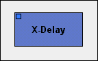

The main power behind Aldrin (besides its huge library of software synthesizers
and dsp effects) is its modular audio routing methodology. What this means,
is that you design the flow of audio through a serie of steps
(machines). This is a very powerful concept, as it lets you design your
own complex audio chains without the limits of physical gear.
Lets start by adding a
delay effect
to our first audio chain. A delay
is very popular DSP effect used in most forms of electronic music. A delay
is basically a complex echo which usually sounds slightly "spacey"
when put on an analog synthesizer.
Add the effect machine by right-clicking on the Machine Editor (
F3
)
and selecting
/New/Effects/Delay/Jeskola Cross Delay.
The delay should now appear marked as
X-Delay
in your Machine Editor.

Next